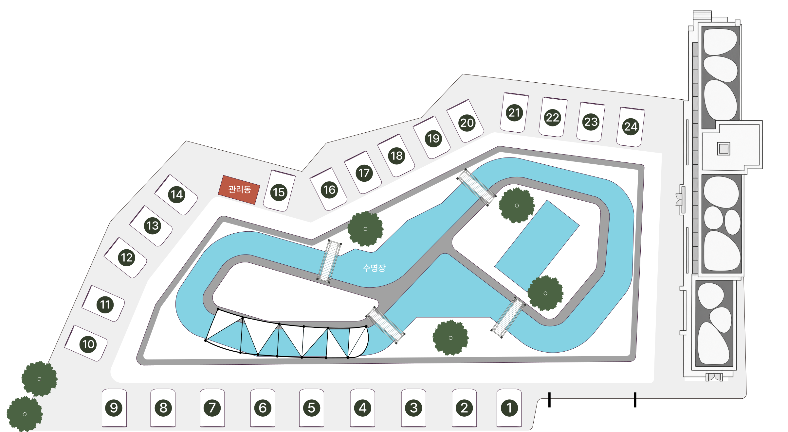

공간 안내
예약 전 이용하실 쉘터의 위치를 확인해 주세요.

Selected Shelter
01리림 01번 쉘터
하단 진입부와 가까운 개별 이용 쉘터입니다. 예약 시 배정된 번호를 지도에서 확인해 주세요.
Shelter Number
A
Pool & Water
지도 중앙의 수영장과 수로입니다. 계절과 현장 운영 상황에 따라 이용 범위가 달라질 수 있습니다.
B
Individual Shelter
01번부터 24번까지 일행별로 배정되는 개별 쉘터입니다. 예약 확정 안내에서 배정 위치를 확인해 주세요.
C
관리동
체크인과 현장 안내가 필요한 경우 방문하는 관리 공간입니다.